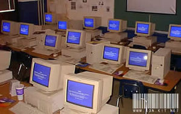

A melhor Loja do segmento
Um pouco de história: Magazine Luiza foi a primeira loja virtual, conhecida como “Magalu” – teve o primeiro formato de venda eletrônica em meados dos anos 1992, no país. Praticamente junto com a criação do WWW (World Wide Web). A experiência pioneira da loja Magazine Luiza foi em terminais eletrônicos e não possuíam conexão com a internet. Essa liberação de conectividade, para fins comerciais, aconteceu apenas em meados dos anos 1990, mais precisamente em 1995. De lá pra cá a evolução digital transformou em e-commerce o negócio de vendas online. Deixando de ser somente a primeira loja virtual do Brasil, para hoje tornar-se um dos maiores players do comércio eletrônico.
Curiosidades
1. Ao ligar uma televisão doméstica modificada a uma linha de telefone, o inventor inglês Michael Aldrich criou o primeiro modelo de compras online do mundo, em 1979.
2. Menos de 5% da população americana tinha acesso à internet em 1994 – mas foi neste ano que a rede de restaurantes Pizza Hut começou a aceitar pedidos online.
3. O primeiro produto anunciado no eBay foi uma caneta laser quebrada. Isso mesmo, quebrada. Em 1995, um programador chamado Omidyar escreveu o código para o que ele chamou de “experimento”. Ele queria saber o que aconteceria se todos os usuários de internet tivessem acesso a uma espécie de mercado virtual. Para testar a ideia, ele anunciou sua caneta quebrada, que acabou vendida por quase 15 dólares.
4. Apesar de ter iniciado suas atividades em 1995, a Amazon.com – hoje o maior varejo online do mundo – só registrou lucro pela primeira vez em 2003, quando fechou o ano com 5 milhões de dólares “sobrando” no caixa. O primeiro livro vendido pelo site foi “Fluid Concepts and Creative Analogies”, algo como “Conceitos de Fluidos e Analogias Criativas”, de Douglas R. Hofstadter, que até hoje está à venda na loja.
5. Os primeiros serviços pagamento online surgiram mais ou menos na mesma época, por volta de 1995. A CyberCash e Virtual ofereciam as ferramentas mais populares na época.
Prestamos serviços de Lanhouse
LAN Houses são lugares escuros, fechados e fedorentos, conhecidos em alguns lugares como Batcaverna. Nesses lugares, pessoas nerds, emos, e viciados em CS se encontram numa grande confraternização observando jogos e orkut.
Confira nossos preços:- 1 hora: R$0,50
- 2 hora: R$0,75
- 3 hora: R$1,00
- +4 horas: R$1,50
Alugamos fitas VHS
O Video Home System é um padrão comercial para consumidores de gravação analógica em fitas de videoteipe. O sistema foi desenvolvido pela Victor Company of Japan. Em meados de 1950, a gravação em fita magnética se tornou um grande contribuidor para a indústria de televisão, por vias dos primeiros video tape recorders.
A Blockbuster (a principal video-locadora da história) chegou ao Brasil em meados da década de 1990 e, em 2007, a rede de franquias, que contava com 127 lojas no país, foi comprada pela Lojas Americanas. O império foi ruindo com a mudança do mercado e, hoje, resta apenas uma loja Blockbuster, em Bend, no estado do Oregon, nos E.U.A.
Venha conferir nossos Produtos!
Temos as melhores ofertas !!!!
© Loja da Informática, 1996 - 1998 | Todos os Direitos Reservados |
Topo ↑ |